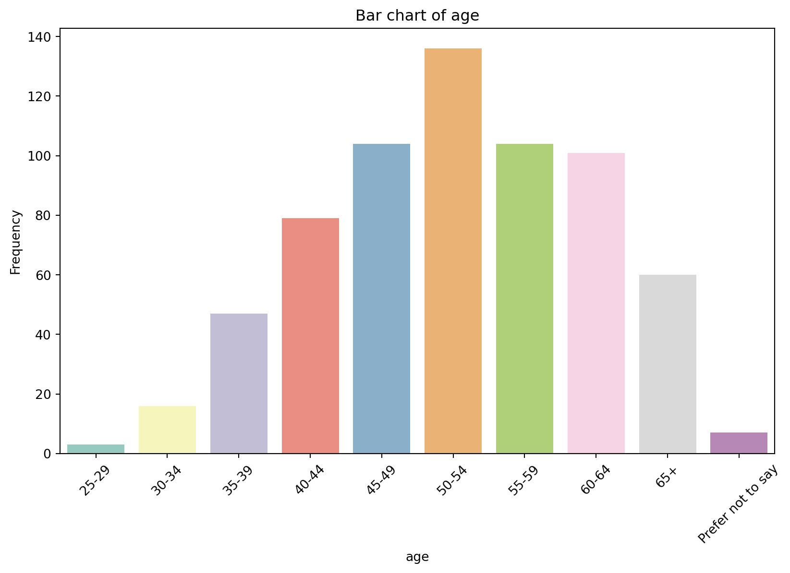
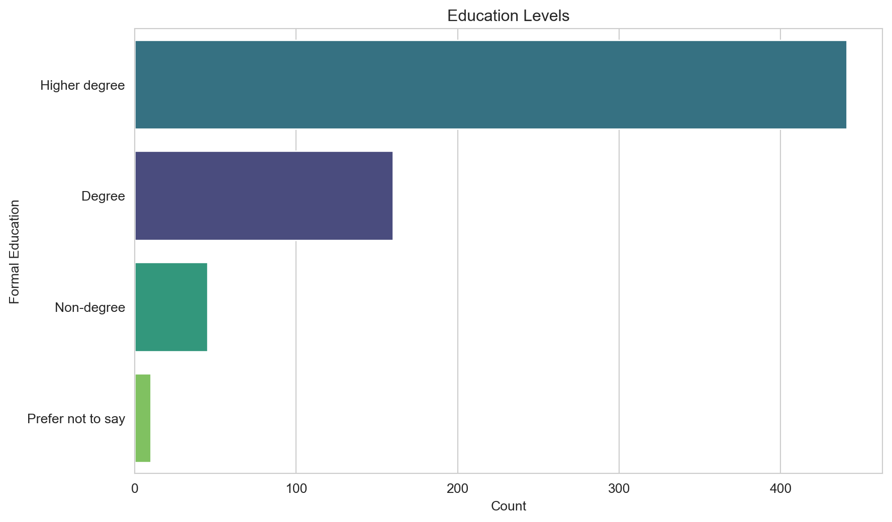
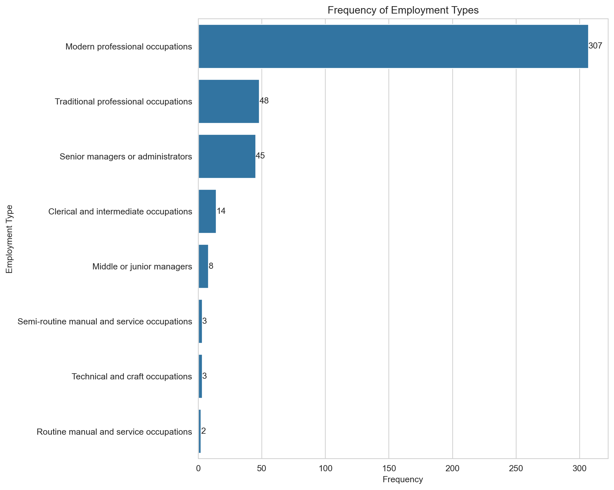
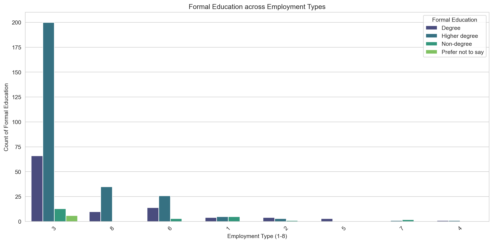

The project studied the people at the forefront of the mindfulness movement
1 Executive Summary
In Part II of the MapMind project, we ask “Who Are Mindfulness Teachers?”. We explore the demographics of mindfulness teachers. We use Exploratory Data Analysis (EDA) and data visualisation to reveal the hidden patterns in the survey data using descriptive statistics.
To understand the context of the attitudinal and behavioural data, we engage in an innovative synthesis of sense-making, data storytelling, and data visualisation.
Overall, we found mindfulness teachers tend to represent as majority:
Female & Middle-Aged
White, Heterosexual, Non-Disabled
Highly Educated
Work in High Status Occupations
Middle-Class or White-Collar Professionals
“Mindfulness teachers” here refers to our sample of participants. But we need to be cautious about generalizing our findings to all mindfulness teachers. We return to this issue in the Discussion.
For an introduction to the overall project, including information about what data was collected, see MapMind (Part I).
2 Data Science Tools
We used the following data science libraries:
Pandas:
A powerful Python data analysis toolkit.
Offers data structures like DataFrames and Series for handling and processing structured data.
Simplifies tasks such as data manipulation, cleaning, exploration, and visualization.
Seaborn:
A Python visualization library based on Matplotlib.
Provides a high-level interface for drawing attractive and informative statistical graphics.
Ideal for exploring and understanding data through rich visualization capabilities.
Matplotlib:
A comprehensive library for creating static, animated, and interactive visualizations in Python.
Offers extensive customization options for plots and charts.
Acts as a foundation for many other plotting libraries, including Seaborn.
Code
import requestsfrom io import BytesIOimport pandas as pdimport numpy as npimport matplotlib.pyplot as pltimport seaborn as snsfrom sklearn.model_selection import train_test_split, cross_val_score, StratifiedKFoldfrom sklearn.ensemble import RandomForestClassifierfrom sklearn.metrics import confusion_matrix, accuracy_score, cohen_kappa_score, roc_auc_score, classification_reportfrom sklearn.preprocessing import OneHotEncoder, StandardScalerfrom sklearn.compose import ColumnTransformerfrom sklearn.pipeline import Pipelinefrom sklearn.model_selection import train_test_splitfrom xgboost import XGBClassifierfrom scipy.stats import chi2_contingency# Import the data from the SPSS filesurvey = pd.read_spss("data/mm_survey_recoded-all-main_SPSS.sav")
Code
import pandas as pd# Load the datasurvey = pd.read_spss("data/mm_survey_recoded-all-main_SPSS.sav")# Renaming columns (including the new columns from the R code)survey.rename(columns={'Q5.2': 'motivations','Q5.1': 'avenues_txt','Q5.3': 'outlook','Q5.4': 'outlook_txt','Q6.1': 'age','Q6.2': 'gender','Q6.3': 'sexuality','R6.4': 'ethnicity','Q6.5': 'disability','R2.25': 'technology','Q7.2': 'website','Q2.13': 'online_teaching','Q2.14': 'online_n','Q2.10': 'year_started','R6.6': 'formal_education','Q6.7': 'prof_qual','R6.7_3': 'profession','Q3.7': 'supervise_emp','Q3.5': 'employment_other_type','Q3.6': 'job_title','Q2.23': 'trained','Q2.24': 'trained_n','R2.6_1': 'advocacy','R2.6_2': 'business_entrepreneurial','R2.6_3': 'management','R2.11': 'courses_in_year','Q2.12': 'clients_taught','Q2.15': 'independent','R2.16': 'nations','R2.17': 'region_england','R2.18': 'region_wales','R2.19': 'region_scotland','R.2.20': 'region_ireland','R2.22': 'area','R.2.21': 'contexts'}, inplace=True)category_columns = ['age', 'gender','sexuality', 'ethnicity', 'disability', 'technology', 'website','online_teaching', 'online_n', 'formal_education', 'prof_qual','profession', 'supervise_emp', 'employment_other_type', 'trained','trained_n', 'advocacy', 'business_entrepreneurial', 'management','courses_in_year', 'clients_taught', 'independent', 'nations','region_england', 'region_wales', 'region_scotland', 'region_ireland','area', 'contexts',]for col in category_columns:if col in survey.columns: survey[col] = survey[col].astype('category')else:print(f"Column {col} not found in DataFrame.")# Convert 'job_title' to stringsurvey['job_title'] = survey['job_title'].astype(str)# Replace empty strings with NaN and convert to floatsurvey['year_started'] = survey['year_started'].replace('', np.nan).astype(float)# Convert the entire series to nullable integer type Int64survey['year_started'] = survey['year_started'].astype('Int64')# Print some values of 'year_started' to check the transformation#print(survey['year_started'].head())# Save the modified DataFramesurvey.to_pickle('data/tidied_survey.pkl')# Print number of users#print(f"Total number of users after transform: {survey.shape[0]}")
3 Who are Mindfulness Teachers?
3.1 Majority Female & Middle-Aged
We asked our participants to report their gender and age.
We found mindfulness teachers in the U.K. tend to be female and middle-aged.
Code
import pandas as pdimport plotly.graph_objects as go# Load the modified DataFramesurvey = pd.read_pickle('data/tidied_survey.pkl')# Assuming 'survey.gender' contains the gender datagender_data = survey['gender'].value_counts().reset_index()gender_data.columns = ['Gender', 'Count']# Creating a table with Plotly Graph Objectsfig = go.Figure(data=[go.Table( header=dict(values=list(gender_data.columns), fill_color='paleturquoise', align='left'), cells=dict(values=[gender_data.Gender, gender_data.Count], fill_color='lavender', align='left'))])fig.update_layout(title='Gender of Mindfulness Teachers')fig.show()# Function to create a bar chart remains the samedef create_bar_chart(data, var_name, flip_axes=False):# Filter out NA values filtered_data = data.dropna(subset=[var_name])# Create a bar chart using seaborn plt.figure(figsize=(10, 6))ifnot flip_axes: sns.countplot(x=var_name, data=filtered_data, palette="Set3", hue=var_name, legend=False) plt.xticks(rotation=45) # Rotate x-axis labels if neededelse: sns.countplot(y=var_name, data=filtered_data, palette="Set3", hue=var_name, legend=False) plt.title(f"Bar chart of {var_name}") plt.ylabel('Frequency'ifnot flip_axes else var_name) plt.xlabel(var_name ifnot flip_axes else'Frequency') plt.show()# Example usage of the function for 'age'create_bar_chart(survey, 'age')

3.2 Majority White, Heterosexual, & Non-Disabled
We asked our participants to self-report their ethnicity, sexuality, and whether they considered themselves to have a disability.
We found they tended to self-report being white, heterosexual or straight, and non-disabled.
Code
import pandas as pdimport plotly.graph_objects as goimport plotly.express as px# Load the modified DataFramesurvey = pd.read_pickle('data/tidied_survey.pkl')# Convert data to long format for facetingsurvey_long = survey.melt(id_vars=['ResponseId'], value_vars=['ethnicity', 'sexuality', 'disability'], var_name='demographic', value_name='value')# Calculate frequency for each value within each demographicsurvey_freq = survey_long.groupby(['demographic', 'value']).size().reset_index(name='freq')# Remove NA valuessurvey_freq = survey_freq.dropna(subset=['value'])# Rename "Non-white" to "People of colour" in ethnicity demographicsurvey_freq.loc[(survey_freq['demographic'] =='ethnicity') & (survey_freq['value'] =='Non-white'), 'value'] ='People of colour'# Sort the frequencies in descending ordersurvey_freq.sort_values(by=['demographic', 'freq'], ascending=[True, False], inplace=True)# Define the order of categories to be displayedcategories = ['ethnicity', 'sexuality', 'disability']titles = ['Ethnicity of Mindfulness Teachers', 'Sexuality of Mindfulness Teachers', 'Disability Status of Mindfulness Teachers']# Creating tables and plotting for each category in the defined orderfor category, title inzip(categories, titles):# Filter data for the current category cat_data = survey_freq[survey_freq['demographic'] == category]# Creating a table with Plotly Graph Objects for the current category fig_table = go.Figure(data=[go.Table( header=dict(values=[category.capitalize(), 'Frequency'], fill_color='paleturquoise', align='left'), cells=dict(values=[cat_data['value'], cat_data['freq']], fill_color='lavender', align='left')) ]) fig_table.update_layout(title=title) fig_table.show()# Creating a bar plot with Plotly Express for the current category fig_plot = px.bar(cat_data, x='freq', y='value', orientation='h', color='value', labels={'value': category.capitalize(), 'freq': 'Frequency'}) fig_plot.update_layout(title=f'Distribution of {category.capitalize()}') fig_plot.show()
3.3 Majority Highly Educated
We asked our participants to report their highest level of formal education.
We found the majority of our sample self-reported as highly educated to higher degree level.
Code
import pandas as pdimport plotly.graph_objects as go# Load the modified DataFramesurvey = pd.read_pickle('data/tidied_survey.pkl')# Calculate frequencies in descending ordereducation_counts = survey['formal_education'].value_counts().sort_values(ascending=False)# Calculate percentagestotal_responses = survey['formal_education'].count()education_percentages = (education_counts / total_responses) *100# Convert to DataFrame for Plotlyeducation_df = pd.DataFrame({'Formal Education': education_counts.index,'Frequency': education_counts.values,'Percentage': education_percentages.values})# Create table using Plotly Graph Objectsfig = go.Figure(data=[go.Table( header=dict(values=list(education_df.columns), fill_color='paleturquoise', align='left'), cells=dict(values=[education_df[k].round(2) if k =='Percentage'else education_df[k] for k in education_df.columns], # Round percentages to 2 decimal places fill_color='lavender', align='left'))])fig.update_layout(title='Formal Education of Mindfulness Teachers')fig.show()# Create a countplot with bars in descending order of countsplt.figure(figsize=(10, 6))sns.set_style("whitegrid")sns.countplot(data=survey, y='formal_education', hue='formal_education', palette='viridis', order=education_counts.index, legend=False)plt.xlabel('Count')plt.ylabel('Formal Education')plt.title('Education Levels')plt.show()

3.4 Majority Work in High Status Occupations
We asked participants to choose the type of their non-mindfulness employment from the following list:
Modern professional occupations (teacher, nurse, physiotherapist, social worker, welfare officer, artist, musician, police officer, software designer)
Traditional professional occupations (accountant, solicitor, medical practitioner, scientist, civil/mechanical engineer)
Senior managers or administrators (planning, organising and co-ordinating work, finance manager, chief executive)
Clerical and intermediate occupations (secretary, personal assistant, clerical worker, office clerk, call centre agent, nursing auxiliary, nursery nurse)
Middle or junior managers (office manager, retail manager, bank manager, restaurant manager, warehouse manager, publican)
Semi-routine manual and service occupations (postal worker, machine operative, security guard, caretaker, farm worker, catering assistant, receptionist, sales assistant)
Routine manual and service occupations (HGV driver, van driver, cleaner, porter, packer, sewing machinist, messenger, labourer, waiter/waitress, bar staff)
We found they tended to report working in high status employment types in their non-mindfulness work, with the majority working in modern professional occupations.
The analysis of the survey data reveals the following distribution of employment types among mindfulness teachers:
The most common category is Modern professional occupations, with a frequency of 307, indicating a significant representation in this group.
This is followed by Traditional professional occupations and Senior managers or administrators, with frequencies of 48 and 45, respectively.
Less common categories include Clerical and intermediate occupations (14), Middle or junior managers (8), and both Semi-routine manual and service occupations and Technical and craft occupations with a frequency of 3 each. - The least common category is Routine manual and service occupations, noted only twice.
These results provide insights into the professional backgrounds of mindfulness teachers.
The following code loads the survey dataset, specifically focusing on the employment_other_type. It checks whether this variable is categorical and if it’s ordinal, then prints its categories. The code cleans the data by removing rows with NaN (‘Not a Number’) values and extracts the first part of the labels for conciseness. A visualization of the frequency of each employment type is generated, annotated with counts for clarity. The code maps these frequencies back to their original, longer labels, providing a comprehensive view of the employment types among mindfulness teachers.
Code
import pandas as pdimport matplotlib.pyplot as pltimport seaborn as sns# Load the modified DataFramesurvey = pd.read_pickle('data/tidied_survey.pkl')# Check if 'employment_other_type' is a categorical variable and if it is orderedis_categorical =isinstance(survey['employment_other_type'].dtype, pd.CategoricalDtype)is_ordered = survey['employment_other_type'].cat.ordered if is_categorical elseFalse# Remove rows where 'employment_other_type' is NaNsurvey_clean = survey.dropna(subset=['employment_other_type']).copy()# Extract the first part of the labels before the bracketsshortened_label_mapping = {label: label.split(' (')[0] for label in survey['employment_other_type'].cat.categories}survey_clean['employment_other_type_short'] = survey_clean['employment_other_type'].map(shortened_label_mapping)# Plot the frequencies of employment types with shortened labelsplt.figure(figsize=(10, 8))employment_order_short = survey_clean['employment_other_type_short'].value_counts().indexax = sns.countplot(y='employment_other_type_short', data=survey_clean, order=employment_order_short)ax.set_title('Frequency of Employment Types')ax.set_xlabel('Frequency')ax.set_ylabel('Employment Type')# Annotate the count on the barsfor p in ax.patches: ax.annotate(f'{int(p.get_width())}', (p.get_width(), p.get_y() + p.get_height() /2), ha='left', va='center')plt.tight_layout()plt.show()

We studied the prevalent employment backgrounds among mindfulness teachers and their correlation with formal education levels, indicating a significant representation from professional and managerial fields. This shows that participants’ highest formal education is most commonly higher degree and their most common employment type is modern professional occupations.
The following code explores the relationship between employment types and formal education of mindfulness teachers. A PrettyTable and a bar plot display the count of formal education across various employment types, ordered by their frequency in the dataset.
Code
import pandas as pdimport matplotlib.pyplot as pltimport seaborn as snsfrom prettytable import PrettyTableimport pandas as pdimport plotly.graph_objects as go# Load the modified DataFramesurvey = pd.read_pickle('data/tidied_survey.pkl')# Ensure 'employment_other_type' is treated as a categorical variablesurvey['employment_other_type'] = pd.Categorical( survey['employment_other_type'], categories=survey['employment_other_type'].cat.categories, ordered=True)# Map employment types to numeric values (1-8) and create shortened labelsemployment_mapping = {category: i for i, category inenumerate(survey['employment_other_type'].cat.categories, 1)}reverse_mapping = {v: k for k, v in employment_mapping.items()}shortened_label_mapping = {category: category.split(' (')[0] for category in survey['employment_other_type'].cat.categories}survey['employment_type_numeric'] = survey['employment_other_type'].map(employment_mapping)survey['employment_other_type_short'] = survey['employment_other_type'].map(shortened_label_mapping)# Create a frequency table with numeric and shortened employment type labelsfrequency_counts = survey['employment_type_numeric'].value_counts().reset_index()frequency_counts.columns = ['Employment Type Numeric', 'Frequency']frequency_table = frequency_counts.copy()frequency_table['Employment Type'] = frequency_table['Employment Type Numeric'].map(lambda x: shortened_label_mapping[reverse_mapping[x]])# Create a Plotly tablefig = go.Figure(data=[go.Table( header=dict(values=list(frequency_table.columns), fill_color='paleturquoise', align='left'), cells=dict(values=[frequency_table[k].tolist() for k in frequency_table.columns], fill_color='lavender', align='left'))])# Update the layoutfig.update_layout( title='Employment Types')# Show the figurefig.show()# Determine the order of bars based on frequency countnumeric_order = [employment_mapping[cat] for cat in survey['employment_other_type'].value_counts().index]# Create a plot showing the relationship between employment type and count of formal educationplt.figure(figsize=(12, 6))sns.countplot(data=survey, x='employment_type_numeric', hue='formal_education', palette='viridis', order=numeric_order)plt.xlabel('Employment Type (1-8)')plt.ylabel('Count of Formal Education')plt.title('Formal Education across Employment Types')plt.xticks(ticks=range(len(numeric_order)), labels=[f'{i}'for i in numeric_order], rotation=45)plt.legend(title='Formal Education')plt.tight_layout()plt.show()

3.5 Majority Middle-Class or White-Collar Professionals
Our data distribution suggests a diversity in the educational and professional backgrounds of mindfulness teachers, with a significant representation in middle and upper social classes. Our analysis of the survey data reveals the majority of teachers belong to the middle-white-collar_emp category (241 individuals), indicating a prevalent background in middle-class, white-collar professions. Upper-elite_emp is the next largest group (126 individuals), followed by working-blue-collar_emp (45 individuals), and upper-elite_plus (18 individuals).
To produce these results, we created a scoring system to classify the social class of mindfulness teachers, based on a combination of formal education, employment type, and roles in supervision or management. Teachers are categorized into Non-degree, Degree, and Higher degree for education, and their employment types are similarly classified. Additional points are awarded for supervisory and management roles, leading to four social class categories: working-blue-collar_emp, middle-white-collar_emp, upper-elite_emp, and ‘upper-elite_plus’.
The function calculate_social_class_score computes the social class score for mindfulness teachers based on their education (ed_class), employment type (emp_class), and roles in supervision and management. It uses a score_map where education and employment types are assigned scores: working-blue-collar and its employment counterpart are assigned 1 point, middle-white-collar and its employment equivalent get 2 points, and upper-elite categories receive 3 points.
The total base score for an individual is the sum of the points from their education and employment types. Additional bonus points are added based on their roles: 1 point if they have a supervisory role (supervise equals “Yes”) and 2 points for a management role (management equals “Yes”). The final score is a combination of the base score and any bonus points, reflecting their overall social class standing.
The following code analyzes the survey dataset and provides outsights into the distribution of social classes among survey respondents. The data is processed to classify individuals into different social classes based on their formal education, employment type, and work roles.
The following code processes the formal_education and employment_other_type columns to categorize them into different social classes. These categories are then used to calculate a social class score for each entry. The code also filters out irrelevant data (entries with Prefer not to say or missing employment types). After calculating the social class scores, the data is further classified into broader social class categories. The distribution of these classes is presented using a PrettyTable and a count plot. The table shows the frequency of each social class category, while the count plot visualizes the distribution of these categories in the dataset. This analysis and visualization help in understanding the composition of the dataset in terms of different social classes derived from education and employment types.
We discuss the potential limitations of our social class scoring system in the Conclusion.
Code
import pandas as pd# Load the original DataFramesurvey = pd.read_pickle('data/tidied_survey.pkl')# Create a new ordered categorical variable for 'formal_education'education_order = ["Non-degree", "Degree", "Higher degree"]survey['formal_education_ordered'] = pd.Categorical(survey['formal_education'], categories=education_order, ordered=True)# Create a new variable based on 'formal_education_ordered'def classify_education(edu):if edu =="Higher degree":return"upper-elite"elif edu =="Degree":return"middle-white-collar"elif edu =="Non-degree":return"working-blue-collar"else:return"unclassified"survey['social_class_ed'] = survey['formal_education_ordered'].apply(classify_education)survey['social_class_ed'] = pd.Categorical(survey['social_class_ed'], categories=["unclassified", "working-blue-collar", "middle-white-collar", "upper-elite"], ordered=True)# Create a new variable 'employment_other_type_filtered' that filters out certain entriessurvey['employment_other_type_filtered'] = survey['employment_other_type']survey = survey[survey['employment_other_type_filtered'].notna() & (survey['employment_other_type_filtered'] !="Prefer not to say")]# Apply transformation to 'employment_other_type_filtered'def classify_employment(emp_type):# Replace with actual conditionif"some condition or keyword for upper-elite_emp"in emp_type:return"upper-elite_emp"elif"some condition or keyword for middle-white-collar_emp"in emp_type:return"middle-white-collar_emp"elif"some condition or keyword for working-blue-collar_emp"in emp_type:return"working-blue-collar_emp"else:return"unclassified"survey['social_class_emp'] = survey['employment_other_type_filtered'].apply(classify_employment)survey['social_class_emp'] = pd.Categorical(survey['social_class_emp'], categories=["unclassified", "working-blue-collar_emp", "middle-white-collar_emp", "upper-elite_emp"], ordered=True)# Calculate social class scores and create new variabledef calculate_social_class_score(ed_class, emp_class, supervise, management): score_map = {'working-blue-collar': 1, 'middle-white-collar': 2, 'upper-elite': 3,'working-blue-collar_emp': 1, 'middle-white-collar_emp': 2, 'upper-elite_emp': 3} base_score = score_map.get(ed_class, 0) + score_map.get(emp_class, 0) bonus_points =0if supervise =="Yes": bonus_points +=1if management =="Yes": bonus_points +=2return base_score + bonus_pointssurvey['social_scores'] = survey.apply(lambda row: calculate_social_class_score( row['social_class_ed'], row['social_class_emp'], row.get('supervise_emp', 'No'), row.get('management', 'No')), axis=1)# Classify social class based on scores and create new variablescore_labels = ["working-blue-collar_emp", "middle-white-collar_emp", "upper-elite_emp", "upper-elite_plus"]survey['social_class'] = pd.cut(survey['social_scores'], bins=[-float('inf'), 2, 4, 6, float('inf')], labels=score_labels, right=False)survey['social_class'] = pd.Categorical(survey['social_class'], categories=score_labels)# Continue with further analysis or save the DataFramesurvey.to_pickle('data/survey_social_class.pkl')
Code
import pandas as pd# Load the survey dataframesurvey_clean = pd.read_pickle('data/tidied_survey.pkl')# Load the modified DataFramesurvey_social_class = pd.read_pickle('data/survey_social_class.pkl')# Check the number of rows and columns in survey_clean before the merge#print("Before Merge - survey_clean shape:", survey_clean.shape)# Merge the dataframes based on 'ResponseId' using a left joinsurvey_social_class_merged = survey_clean.merge(survey_social_class[['ResponseId', 'social_class']], on='ResponseId', how='left')# Check the number of rows and columns in survey_social_class_merged after the merge#print("After Merge - survey_social_class_merged shape:", survey_social_class_merged.shape)# Now survey_social_class_merged contains the 'social_class' variable from survey_social_class# Continue with further analysis or save the DataFramesurvey_social_class_merged.to_pickle('data/survey_social_class_merged.pkl')
Code
# Load the survey dataframesurvey_social_class = pd.read_pickle('data/survey_social_class.pkl')# Load the survey dataframesurvey_social_class_merged = pd.read_pickle('data/survey_social_class_merged.pkl')# Sample the same row numbers from the 'social_class' variable in both dataframesrow_numbers_to_sample = [1, 3, 5, 7] # Replace with the row numbers you want to sample# Check if the row numbers exist in both dataframes before samplingcommon_row_numbers =set(row_numbers_to_sample) &set(survey_social_class.index) &set(survey_social_class_merged.index)# Create a new list of row numbers that exist in both dataframescommon_row_numbers =list(common_row_numbers)# Sample the 'social_class' variable for the common row numberssampled_social_class_survey_social_class = survey_social_class.loc[common_row_numbers, 'social_class']sampled_social_class_survey_social_class_merged = survey_social_class_merged.loc[common_row_numbers, 'social_class']# Print the descriptive summaries of the sampled 'social_class' variable in both dataframes#print("Descriptive Summary of 'social_class' in survey_social_class:")#print(sampled_social_class_survey_social_class.describe())#print("\nDescriptive Summary of 'social_class' in survey_social_class_merged:")#print(sampled_social_class_survey_social_class_merged.describe())
Code
import pandas as pdimport plotly.express as pximport plotly.graph_objects as go# Load the modified DataFramesurvey = pd.read_pickle('data/survey_social_class_merged.pkl')# Calculate the frequency and percentage of each social classvalue_counts = survey['social_class'].value_counts()total = value_counts.sum()percentages = (value_counts / total) *100# Create a DataFrame for the tabletable_df = pd.DataFrame({"Social Class": value_counts.index,"Frequency": value_counts.values,"Percentage": percentages.values})# Create a Plotly tablefig = go.Figure(data=[go.Table( header=dict(values=list(table_df.columns), fill_color='paleturquoise', align='left'), cells=dict(values=[table_df[k].tolist() for k in table_df.columns], fill_color='lavender', align='left'))])# Update the layoutfig.update_layout( title='Social Class of Mindfulness Teachers')# Show the figurefig.show()# Prepare the DataFrame for Plotly Expresssocial_class_counts = survey['social_class'].value_counts().reset_index()social_class_counts.columns = ['Social Class', 'Frequency']# Plot the distribution of 'social_class' using Plotly Expressfig = px.bar(social_class_counts, x='Social Class', y='Frequency', title="Distribution of Social Classes Based on Total Score")fig.update_xaxes(title_text='Social Class')fig.update_yaxes(title_text='Number of Respondents')fig.show()# Optionally, print a sample of social class scores#print("Sample of social class scores:\n", survey['social_scores'].sample(5))
4 Conclusion
This section gives a brief summary of the report, impact, limitations, and potential future work.
4.1 Overview
By putting people at the heart of research on technology, we have revealed hidden patterns in the data, the human stories behind the visualisations, and produced valuable outsights which can inform how the world could change.
On the one hand, the majority of our participants are a somewhat privileged group: white, heterosexual or straight, non-disabled, highly educated, working in high status occupations, with high social class status.
On the other hand, they are predominantly female and middle-aged.
4.2 Limitations & Future Potential
Overall, we need to be careful when interpreting the findings of our survey, and keep the following limitations in mind when evaluating our findings:
While likely representing the majority of mindfulness teachers who were active during 2017-2021, our study mostly took place before the COVID-19 pandemic, which might have led to significant changes in the mindfulness field.
We used a convenience sample, with voluntary participation. This design is potentially subject to a self-selection bias, where those who responded might have different characteristics to those who did not reply. Our sample might not be representative of the wider U.K. population.
We could have situated our survey sample in relation to the U.K. population as a whole by integrating census data. This could be especially interesting for the geographical mapping presented in MapMind (Part I).
We could pay more in-depth attention the experiences of participants in the minority of our sample: people of colour, of diverse sexualities, with working class backgrounds. We could explore these participants’ experiences in greater depth.
The social class scoring system is based on understandings of the social status and the social hierarchies of employment, education, supervision, and management from sociology. Obviously, this data needs to be treated with some caution, because unlike the other demographic variables, we have classified the social class of our participants, based on their self-reported status. Nevertheless, it is striking the degree to which a majority of our participants have high level formal education, combined with high status occupations.
The study’s limitations, primarily its reliance on self-reported data and the need for broader demographic representation, pave the way for future research to build upon these findings and explore other influential factors in mindfulness teaching.
By putting people at the heart of the data revolution, we can reveal previously hidden inter-sectional patterns, thus promoting decision-making for fairer, more equal and sustainable futures.
We can use the tools of free and open science - especially Python - to make the findings of quantitative research, data analysis, and data science broadly accessible to a wide audience.